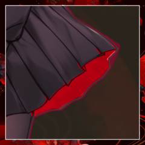

GM
Dead or AliCe『It Happens All The Time.』
GM
『きみが目を醒ましてから100年の月日が流れました。』
GM
『兎は落下し、猫は干乾び、帽子は裂け、女王は壊れ、』
GM
『大いなる暴力と死が、堕落した国に降り注ぎます。』
GM
『猟奇と才覚、愛によって救われるこの世界で』
GM
『僕らは今も、新たなアリスを待ちわびています。』
GM
踊るような、誘うようなその文面を読み終えた”あなた”の視界を、
GM
Dead or AliCe
『It Happens All The Time.』
GM
それまでのあなたが立っていたのはどんな場所だったか。
GM
顔を上げれば、荒れ果てた平野があなたの目の前に広がっていた。
GM
耳に遠く、遠く、唸るような音がする。
生命の息吹らしきものをまるで運ぶことのない、うら寂しい風の音。
ダザック
俺はさっきまで普通に部屋にいたはずなんだが…」
GM
代わりに吹きすさぶ砂と打ち捨てられた岩、空を覆う濁った雲。
ダザック
周囲を見渡し、一歩を踏み出す。 ざりざりとした砂の感覚。
ダザック
「……人の気配はないが、魔法かなんかで飛ばされたのか……？そういえばさっき変な封書を開けて中の手紙を読んだが…それが原因か？」
GM
あなたの類推に応える声はなかった。
乾いた砂を踏み締める感触。
嘲笑うように、その足元を小石が転がっていく。
GM
呆然と視線を彷徨わせた中に、やがて、人影のようなものを発見する。
GM
痩せ細った枯木の根本に蹲るようにしている、黒い影。
ダザック
人影らしきものを目にした後、腰に差してあるショートソードに手を置くと、それをマントで隠す。
ダザック
その人影に警戒しながら近づいて、おい、と声をかけようとする。
少女
声をかけられて、かすかに背を震わして、顔を上げる。
少女
助けられるべき、救うべきものの、象徴のような。
ダザック
言葉は通じるようだ、と冷静に少女の姿を見下ろすと、その場にしゃがみこんで問いかける。
ダザック
（傷がひどいが、手当するすべはないな…どうするか……
少女
直後ぼろぼろの細い身体が、その傷では有り得ない速度に跳ね起きて、
ダザック
見てくれからは想像もできない速度で襲い掛かられ、面食らった。それでも何とか反応すると、ショートソードを抜き放って防御態勢を取る。
少女
少女の矮躯に見合わない膂力が、ショートソードを握る腕に伝わる。
少女
汗を垂らし、涎を滴らせ、口角に泡を飛ばしながら、少女が叫ぶ。
少女
振り上げられた足があなたの腹に食い込み、突き放す。
ダザック
「訳も分からず殺されてたまるか、クソが！」
三ノ宮 炉
その隙に紅い蝶はいくつも分かたれて群れとなり、

三ノ宮 炉
この荒野には不似合いな軽装で、
三ノ宮 炉
その指先に一匹、紅い蝶を止まらせながら。
三ノ宮 炉
傷ついた少女を隙なく睨み据えながら、ダザックへと問う。
ダザック
突如現れた少女に面食らって目を瞬かせるが、すぐに睨みつける。
ダザック
「次から次へと何なんだ、まるで意味が分からん。助力だと？いるかそんなもの」
ダザック
「邪魔するつもりなら……」そう言いかけて少女を見ると、どこかで見たことのある服だったので一瞬止まる。しかし首を振って先程襲い掛かって来た女を見据える。
三ノ宮 炉
「一人で十分と？ 確かにその娘、手負いですけれど」
少女
言葉の意味を問うより先に、少女のナイフがダザックへと振るわれる。
少女
かち合う一撃、腕に響く振動。
信じがたいことと思いながら、あなたは確信する。
ダザック
（なんなんだ、このふざけた力は……腕がしびれる、クソ……だがやりようは…）
ダザック
ナイフをショートソードで受け止めると、一瞬力を抜き、剣の腹で相手の刃を滑らせ受け流すと、すれ違いざまに蹴りを見舞う。
少女
手応えはある。
か弱い少女の身体を打ち据えるに十分な衝撃が加えられたはずであった。
少女
しゃにむに叫んだ少女が振り回したナイフが、あなたの頬を掠め。
少女
あと数センチのズレで、その一撃が首を刎ねていただろうことを、実感する。
ダザック
（こいつのタフさは何だ、ただの女ではないことは確かだが……殺すしかないのか…
ダザック
改めて剣を構え、相手を見据える。次は蹴りではなく、剣を振りぬくつもりだ
少女
俊敏な身のこなし、でたらめな膂力と耐久性。
殺す気で向かえばいつでも、とは言えないだろうことを、
三ノ宮 炉
「もう一度、訊いて差し上げましょう。
おじさま」
ダザック
その声に舌打ちを響かせ、横目で少女を見る。
三ノ宮 炉
指先に紅い蝶を纏わせながら、改めて眼前の狂った少女を睨み据える。
三ノ宮 炉
「これから行わるることの意味も、私は」
GM
＊HPは半分からのスタート。
心の疵は両方抉れ、発狂しています。
GM
1. 陣営の確認
2つ以上の陣営に分かれて戦います。裁判に参加するキャラクター、および陣営を確認しましょう。
GM
＊RPの流れで既に決定しているので省いちゃいましょうね。
ダザック・炉VS少女です。
GM
2. シートの準備
3. 山札の配置
こちらは双方既に済んでいます。
GM
4. 一部技能や小道具の使用
これも今使うタイミングのものは存在しないのでスキップ。
GM
5. 行動順の決定
裁判の参加者は〔1D6＋【才覚】〕で「先制値」を決定します。先制値の高いキャラクターから順に行動順が割り振られます。
先制値が同じキャラクターがいる場合、そのキャラクター同士で再び先制値決定を行い、高いほうが先の行動順となります。全員の行動順が一意に定まるまで、この操作を繰り返してください。
GM
＊ダザックと炉は1D6+3。
少女は1D6を振り、先制値を決定してください。
三ノ宮 炉
1d6+3 (1D6+3) ＞ 6[6]+3 ＞ 9
ダザック
1D6+3 (1D6+3) ＞ 5[5]+3 ＞ 8
GM
＊炉＞ダザック＞少女 で行動順が決定されました。
GM
＊行動順と同じ順番で手札を引いていきます。
まずは炉から。
GM
＊全員が手札を引いたので、手番を回していきます。
三ノ宮 炉
2d6+3+1+1=>7 判定（＋才覚）（＋多彩な凶器）（＋万能） (2D6+3+1+1>=7) ＞ 4[3,1]+3+1+1 ＞ 9 ＞ 成功
三ノ宮 炉
c(3+3+1) c(3+3+1) ＞ 7
三ノ宮 炉
Choice[《封印》,《猛毒》,《指切り》,《衰弱》] (choice[《封印》,《猛毒》,《指切り》,《衰弱》]) ＞ 《封印》
[ 少女 ] HP : 9 → 2
[ 少女 ] 封印:1R炉 : 0 → 2
三ノ宮 炉
＊行動は以上です。
使った札は捨てます。捨て札置き場へと。
GM
＊そういえば本来対象の宣言が必要なのでした。すみません。
まあ今回は少女以外にやらない気がするのでそのままどうぞ。
ダザック
2d6+3+1+1=>7 判定（＋才覚）＋多彩な凶器）（＋万能）
ダザック
2d6+3+1+1=>7 判定（＋才覚）（＋多彩な凶器）（＋万能） (2D6+3+1+1>=7) ＞ 12[6,6]+3+1+1 ＞ 17 ＞ 成功
GM
PCが裁判中の判定でスペシャルを起こした場合、即座にPCのHPを1D6点回復します。
GM
＊今のHPが満タンなので特に何もないらしいですが、スペシャルはスペシャルで、絶対成功で、すごいです。
GM
＊ダザックさんは威力が3点で、ここに少女が発狂しているため被ダメ+1が入り
[ 少女 ] HP : 2 → 0
少女
2d6+1-0 判決表 (2D6+1-0) ＞ 5[4,1]+1-0 ＞ 6
GM
6～8 ランダムな能力値で判定し、成功すればHPを1点回復して立ち上がる。失敗すれば〈昏倒〉する。
少女
Choice[猟奇,才覚,愛] (choice[猟奇,才覚,愛]) ＞ 猟奇
少女
2d6+3=>7 判定（＋猟奇） (2D6+3>=7) ＞ 4[1,3]+3 ＞ 7 ＞ 成功
[ 少女 ] HP : 0 → 1
[ 少女 ] 前科 : 0 → 1
少女
＊補助動作 封印中につきcQを鋭気として使用
[ 少女 ] 衰弱:1Rダザック : 0 → 2
GM
＊では次の判定に+5をしていただき、妨害の判定を！
ダザック
2D6+3+1+1+5 (2D6+3+1+1+5) ＞ 11[6,5]+3+1+1+5 ＞ 21
少女
2d6+3=>21 判定（＋猟奇） (2D6+3>=21) ＞ 9[6,3]+3 ＞ 12 ＞ 失敗
三ノ宮 炉
＊誰かの判定失敗後に割り込み。【才覚】点のダメージを与える。その判定の目標値が自身の技能によって変更されたものなら、ダメージが〔威力〕点増加する。
三ノ宮 炉
c(3+2+1) 才覚+衰弱+発狂 c(3+2+1) ＞ 6
[ 少女 ] HP : 1 → 0
少女
2d6+1-1 判決表 (2D6+1-1) ＞ 9[3,6]+1-1 ＞ 9
[ 少女 ] HP : 0 → 1
[ 少女 ] 前科 : 1 → 2
GM
全員が手番を終了したら、ラウンド終了です。
裁判の参加者は行動順に、手札のカードを好きなだけ選んで捨ててください。1枚も選ばなくても構いません。
その後「② ラウンド開始」に戻ります。
三ノ宮 炉
2d6+3+1+1=>7 判定（＋才覚）（＋多彩な凶器）（＋万能） (2D6+3+1+1>=7) ＞ 6[5,1]+3+1+1 ＞ 11 ＞ 成功
三ノ宮 炉
c(3+2+1) 威力 衰弱 発狂 c(3+2+1) ＞ 6
三ノ宮 炉
Choice[《封印》,《猛毒》,《指切り》,《衰弱》] (choice[《封印》,《猛毒》,《指切り》,《衰弱》]) ＞ 《衰弱》
GM
＊そういえば炉の行動前に少女の封印も減ってますね
[ 少女 ] 封印:1R炉 : 2 → 1
[ 少女 ] 衰弱:2R炉 : 2 → 2
[ 少女 ] HP : 1 → 0
少女
2d6+1-2 判決表 (2D6+1-2) ＞ 6[5,1]+1-2 ＞ 5
GM
その狭間に奔る紅い蝶が、少女への致命打となった。
少女
肉を焼かれ、皮膚を裂かれ、震えながら蹲る少女の姿。
ダザック
大きく一つ息を吐く。もうこれ以上動くこともないだろう…と剣を下ろした。
三ノ宮 炉
炎を纏った赤い蝶が少女へととりついて、
少女
炎に包まれ、悲鳴をあげ、地をのたうつ少女を。
ダザック
肉の灼けるにおいに顔をしかめる。もうこうなってしまっては手遅れだ。消したところで苦しめるだけだろう
三ノ宮 炉
「30日の猶予を得ることとなりました」
ダザック
「どういうことだ、まるで要領を得ない。いったいここはどこで、あんたは何者だ？この女はなんだったんだ」
ダザック
「……いや、先に礼を言うべきか。助かった」
三ノ宮 炉
「そして、おいでませ。”救世主さま”」
三ノ宮 炉
「我々救世主に、30日に1度の殺し合いを強要する」
ダザック
「……さっきも言っていたが、救世主…？てのはどういうことだ？俺はそんなものになった覚えはないぞ」
三ノ宮 炉
「でも、残念ながら私達、そうみたいなんです」
ダザック
「……あまり聞きたくはないが……今は情報が欲しいな」
三ノ宮 炉
「そこに息づく”末裔”と”亡者”のこと」
三ノ宮 炉
乾いた荒野をゆく、果てのない道のり。
最低限の旅支度のできている自分にさえ過酷に思われ、
軽装の少女の細い脚ではそれが尚更と思われたが。
三ノ宮 炉
不思議と自分の身体には、なかなか疲れが訪れず。
目の前の少女も似たようなものであるようだった。
三ノ宮 炉
そのさなかに、少女はこの世界について語る。
三ノ宮 炉
堕落の国。
かつて訪れた救世主――アリスが去り、荒廃した世界。
三ノ宮 炉
救いを求め、異世界より救世主を呼ぶ仕組み。
招待状。６ペンスコインとそれによってもたらされる、
「心の疵」からなる奇跡の力。
三ノ宮 炉
奇跡の力を持つ救世主に助けを求めるしかない無力な末裔たちのこと。
その末裔を脅かし、救世主すら殺してみせる、亡者なる化け物のこと。
三ノ宮 炉
そして、先程伝えた30日ルールのこと。
三ノ宮 炉
「この世界に招かれた、私達”救世主”の」
ダザック
炉が語る、荒唐無稽とも思える事柄に耳を傾けながら、先を行く少女のあとを追う。
ダザック
「身勝手な話だな。ここから出る術はあるのか？」
三ノ宮 炉
「私もこの世界に落ちてひと月かそこらですので……」
ダザック
「……そうか」
はじめてではない、と語る言葉に一言だけ返す。
ダザック
責められるものではない、「仕組み」を聞いた後では猶更に。
三ノ宮 炉
「きっと、刻限が迫っていたのでしょうね」
三ノ宮 炉
「自分が亡者になってしまうと、知っていたから」
ダザック
「殺した相手のことを、考えるもんじゃない」
三ノ宮 炉
「なかなか、”救世主”としてうまくやっていかれそう」
ダザック
「そのおじさまっていうのやめてくれ。すげえ歳くった気分になる」
三ノ宮 炉
「年上の殿方には敬意を払うよう、教えられてまいりましたわ」
ダザック
「ずいぶんいい育て方されたもんだ。まあなんでもいい、好きなように」
三ノ宮 炉
「あそこには、末裔の方々が多くいらっしゃいます。
……きっと」
三ノ宮 炉
「この世界の事を、より深くご理解いただけることと思いますよ」
GM
古びてぼろぼろの建物がぽつぽつと偏在する、
見窄らしい、それでもどうやら集落めいたものが見て取れた。
GM
そのように思わされてならない、荒廃した村が。
ダザック
炉が見やった先を同じように眺める。そうして空を見上げてはぁ、と大きくため息を吐いた。